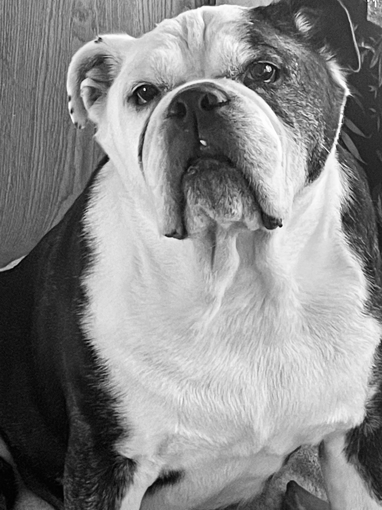
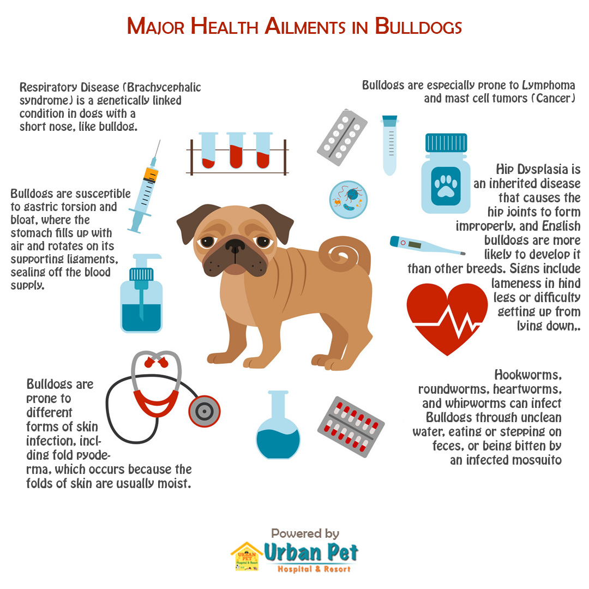

It's hard to imagine these lovable, slobbery silly dogs were bred in England hundreds of years ago for "bull baiting;" a sport and theater where the bulldogs antagonized bulls. Bred and known to be muscular, crushing, and violent, made them popular in dog fighting as well. When dogfighting was outlawed in 1835, the breed almost became extinct. Luckily, for English Bulldog lovers like me, owners bred out the aggression.
These breeding changes gave us the coveted Bulldogs we have today, but not without great costs! Both financially upfront when purchasing a bully and throughout the known short lifespan of the dog, due to an array of health issues. According to Puppies.com, the average purchase cost of an English Bulldog from a reputable breeder here in the state of Tennessee is between $1,500 - $3,500. My English Bulldog, Munson, turned 11 years old today. I purchased him from a breeder in Georgia for $1,500. He has been living on borrowed time since he was eight months old, due to complications to vaccines, surgery, and spinal malformities [unknown at birth]. Over the course of his eleven years of being my snugglebully, I have spent thousands of dollars on his everyday care and medical care. The Urban Pet Hospital's Blog has detailed information about all things English Bulldogs specifying that annual Bulldog expenses can be upward of $5,000.
"Many people desire to have an English Bulldog. According to a recent survey, the breed is the fifth most popular in the US. However, I always caution and explain both the initial and ongoing expenses of having a bully, as well the time investment. In spite of many famous people owning English Bulldogs, creating a fad, Bulldogs are well-known for certain medical conditions and complications due to their breeding.

© 2024 English Bulldogs